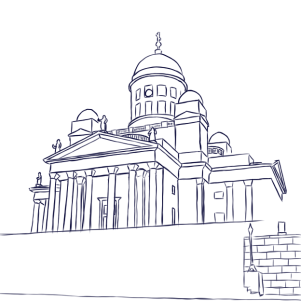

In which of these can you bunk while in Rovaniemi?
An igloo made of glass
A hotel made of ice and snow
Both
Where in Rovaniemi can you meet Santa Claus?
in Arktikum
in Korvatunturi
in Joulupukin pajakylä
Which of these museums is located in Rovaniemi?
Ateneum
Kiasma
Arktikum
How many slopes are there in the Ounasvaara ski resort?
6
9
11
Which of these activities can you do in Hyskypark?
Go swimming
Go skydiving
Go dog sledding
Which of these animals can you eat in Rovaniemi?
Cats
Guinea pigs
Reindeers
According to Finnish Meteorological Institute how many nights out of five can you see the Northern lights?
One out of five
Three out of five
Four out of five
Which phenomenon will you only see in Rovaniemi during the summer solstice?
Aurora Borealis
Sun Halo
Nightless Night
What phenomenon is this?(kuva tykkylumesta)
Aurora Borealis
Undulatus asperatus
Tykky
When did Rovaniemi separate from Kemi?
1892
1538
1785